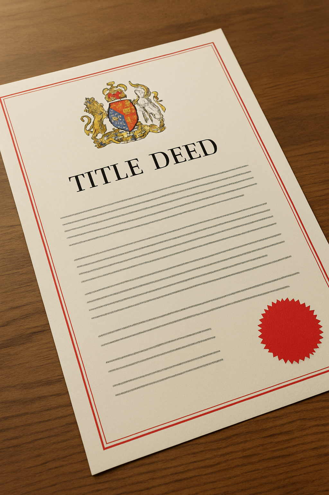

Registering a property with the Land Registry is a crucial step in securing legal ownership in the United Kingdom. Whether you're buying, inheriting, or transferring property, this guide will walk you through everything you need to know.
The Land Registry is a government department that manages the register of land and property in England and Wales. It holds official records on ownership, boundaries, charges, and rights affecting the property.
Property registration is mandatory in the following cases:
Use the Land Registry search service to see if the property is listed.
You will need the sale deed, identity verification, and any additional legal documents.
Apply using forms like AP1, FR1, or TR1, depending on the situation. Include title plan and payment of the registration fee.
Once processed, the Land Registry issues a title deed confirming ownership and rights.
The title deed (also known as title register) contains essential data such as the owner's name, property description, covenants, charges, and restrictions.
Fees vary based on the property's value and whether the registration is voluntary or compulsory. Most residential applications range between £40 and £910.
At elandregistry.com, we provide expert legal assistance to help you register your property smoothly, whether residential or commercial.
Make sure your property is protected for the future – register it today.